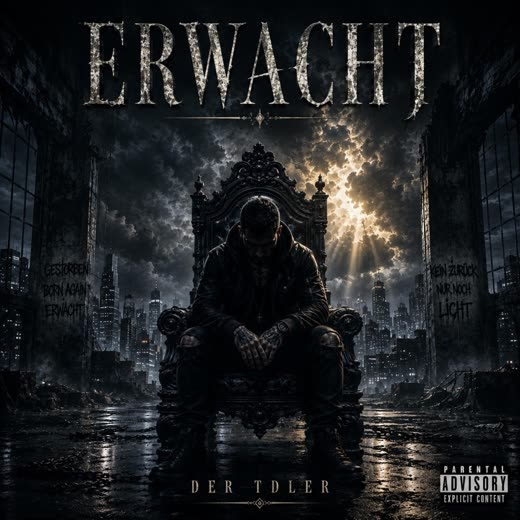
Album · 18 titres
Erwacht
Le chemin du dernier battement de cœur jusqu’au matin où l’on se relève. De Die letzte Reise à Ich bin Ich.
Il existe un livre.
Musique
Deux albums, deux EP et plus de quarante singles. Tout est ici, d’un seul tenant.
Le lecteur provient de Spotify. Si vous le chargez, votre navigateur établit une connexion avec Spotify et votre adresse IP y est transmise. Tant que vous ne cliquez pas, rien ne se passe.
Suivez TDler et écoutez
Les albums

Le chemin du dernier battement de cœur jusqu’au matin où l’on se relève. De Die letzte Reise à Ich bin Ich.
Il existe un livre.
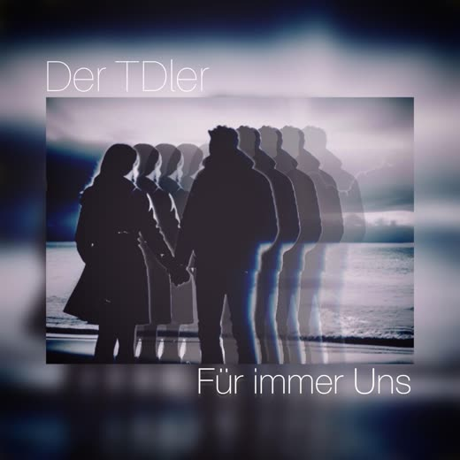
Dix-huit titres sur le fait de rester.
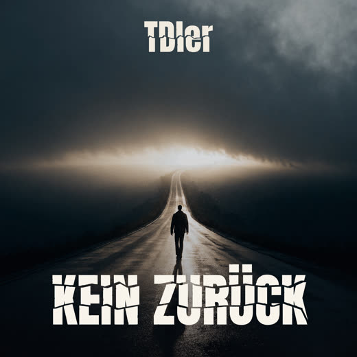
« J’ai brûlé les ponts, trop perdu, et pourtant je me suis retrouvé. »
S’y ajoutent les EP Just Me! et EP I — et plus de quarante singles.
Toutes les parutions
2 albums, 2 EP et 46 singles — les plus récents d’abord.
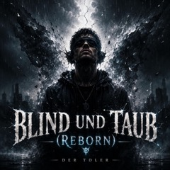
Blind und Taub (Reborn) Single · 2 septembre 2026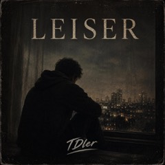
Leiser ((Live unplugged)) Single · 19 août 2026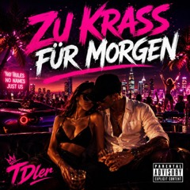
Zu krass für Morgen Single · 20 juillet 2026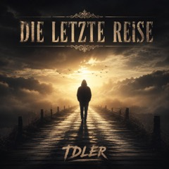
Die letzte Reise Single · 13 juin 2026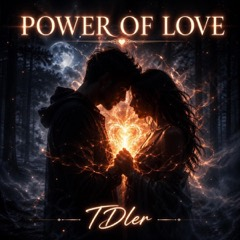
Power of Love (Symphony) Single · 28 avril 2026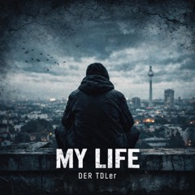
My Life(Final-Remix) Single · 5 avril 2026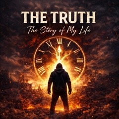
The Truth (The Story of my Life) Single · 13 mars 2026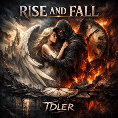
Rise and Fall Single · 16 février 2026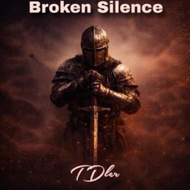
Broken Silence Single · 9 février 2026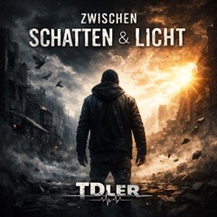
Zwischen Schatten und Licht Single · 12 janvier 2026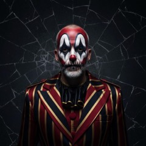
Just Me! EP · 4 titres · 4 janvier 2026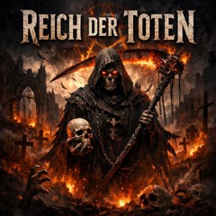
Reich der Toten Single · 17 décembre 2025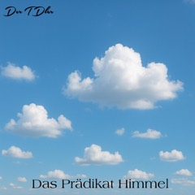
Das Prädikat Himmel Single · 11 novembre 2025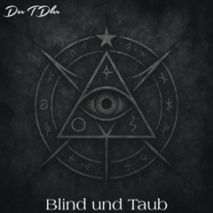
Blind und Taub Single · 4 novembre 2025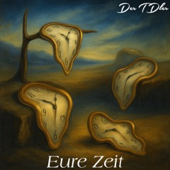
Eure Zeit Single · 31 octobre 2025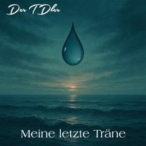
Meine letzte Träne Single · 24 octobre 2025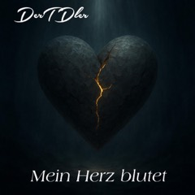
Mein Herz blutet Single · 21 septembre 2025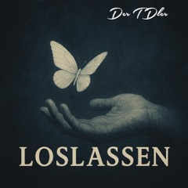
Loslassen Single · 20 août 2025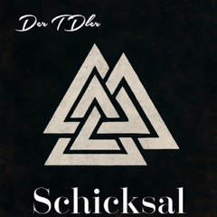
Schicksal Single · 10 août 2025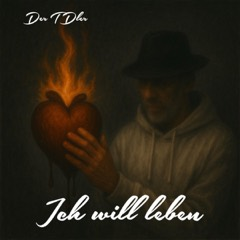
Ich will leben Single · 2 juillet 2025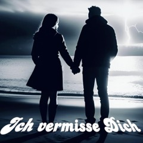
Ich vermisse Dich Single · 29 juin 2025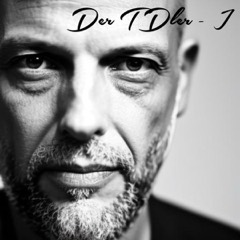
EP I EP · 6 titres · 20 juin 2025